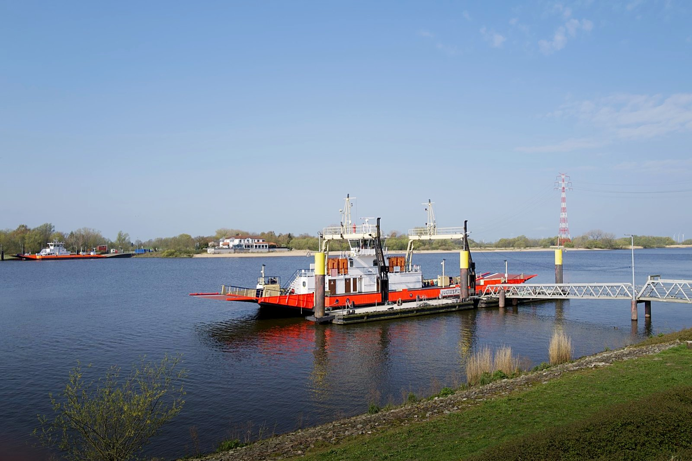
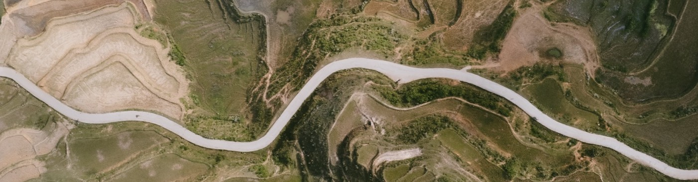

The ellipsis says a preview opens first. Each item has its hint under it.
⌥ held
Panorama
Pick merged
Merge panorama and add to Development set
Import merged
Merge panorama into the catalog only
Holding ⌥ drops the ellipsis: the merge starts at once with the last settings. ⌥-click on the bracket header’s buttons does the same.
Refused
HDR
Pick merged…
Merge HDR and add to Development set
Import merged…
Merge HDR into the catalog only
Exposures must differ: DSC_4102.NEF and DSC_4103.NEF are both 0 EV
The plan’s reason is the tooltip of both disabled items of that kind; the other kind stays available.
Pending rows
Merging HDR · 3 exposuresAligning
Merging panorama · 7 photosStitching
Panorama merge failed · 7 photos— DSC_4107.NEF shares no detail with the other frames
One row before the merge’s first frame, in the view it was asked from. The stage words are the job’s: “Reading 2 of 7”, “Matching”, “Stitching”, “Saving”.
Result badges at three cell sizes
Long words
HDR · 3 exposures

Panorama · 7 photos

Short words · default cell
HDR · 3
Pano · 7
Icon only · smallest cells
The badge sits at the top right, beside the Development set’s check, and gives way from the long words to the short ones to its icon. A press on it, or S, opens the stack: its chevron turns down.
Preview sheet status lines
Preparing
Reading 2 of 3then Aligning · settings stay live; merging now continues this work
Ready · HDR
Preview from 1,024-pixel frames · aligned, 0.04 px
Ready · panorama
Crop loses 9% at the edges · Cylindrical, 164° × 41°
Refused · HDR
Exposures must differ: DSC_4102.NEF and DSC_4103.NEF are both 0 EV
Refused · panorama
Cannot stitch: DSC_4107.NEF shares no detail with the other frames
A refusal keeps the sheet open with both merges disabled; changing a setting plans again. The preview is display-referred and drawn from the frames’ analysis proxies, never the saved pixels.
Overlay legend chips
HDR · deghost overlay
From −2 EVFrom 0 EVFrom +2 EVFrom −2 EV · fallback
Each moving region is tinted in its exposure’s colour and labelled where it starts. A fallback region, taken from another exposure because the reference clipped there, is hatched.
Panorama · crop and coverage, frame outlines
CropOutside the cropFrames 1–7
The crop is the accent rectangle with corner ticks; outside it the stitch is dimmed. Frames are numbered in the stack’s order, left to right. Seams are not shown.